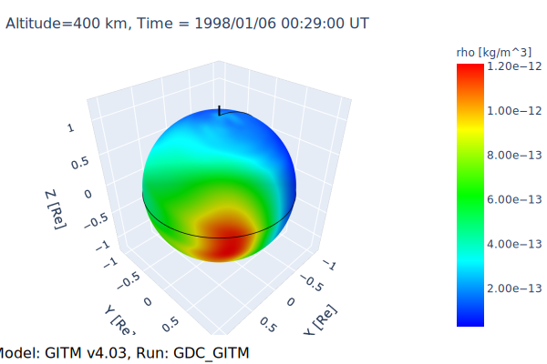
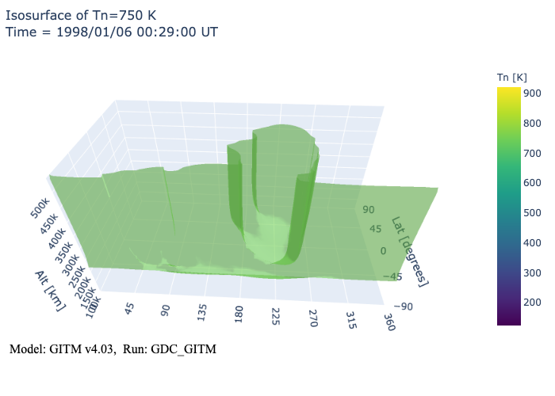

import kamodo
from readers.gitm.gitmK import GITM
import glob
import numpy as np
from plotly.offline import init_notebook_mode, iplot, plot
import plotly.io as pio
from kaleido.scopes.plotly import PlotlyScope
init_notebook_mode(connected = True)
# Select the data file
runpath = "../../../data/"
#runname = "Sophia_Schwalbe_062220_IT_4"
#runname = "Aaron_Ridley_081017_IT_2"
runname = "GDC_GITM"
files = glob.glob(runpath+runname+'/*.bin')
files.sort()
file = files[-1]
model = GITM(file, runpath=runpath, runname=runname, debug=1)
model
opening ../../../data/GDC_GITM/3DALL_t980106_002900.bin
... simulation time = 1998-01-06 00:29:00.000539
... raw data array size = (112, 184, 54)
... range of altitudes is 96880.16186492516 to 567345.7542485126 meters.
... GITM code version 4.03
Time loading file and kamodifying results: 2.6889 seconds
#Write list of variables to file 'kamodo_info'
model.write_variables()
Interpolation¶
print(model.rho([[70,30.,440000.],[70,40.,400000.],[90,40.,400000.],[120,40.,440000.]]))
[2.68652554e-14 9.22378231e-14 1.12557827e-13 9.39359154e-14]
var="rho"
grid = np.ndarray(shape=(4,3), dtype=np.float32)
grid[:,0] = [70, 70, 90, 120]
grid[:,1] = [30, 40, 40, 40]
grid[:,2] = [440000., 400000., 400000., 440000.]
units=model.variables[var]['units']
test = model.variables[var]['interpolator'](grid)
print(units)
print(test)
kg/m^3
[2.68652554e-14 9.22378231e-14 1.12557827e-13 9.39359154e-14]
Plotting¶
# Slice at given Altitude
fig=model.get_plot('rho', 400000., '2D-alt', colorscale='Viridis', log="T")
#iplot(fig)
#pio.write_image(fig, 'images/GITM_2D-alt.svg')

# Slice at given latitude
fig=model.get_plot('Tn', 0., '2D-lat', colorscale='Rainbow')
iplot(fig)
#pio.write_image(fig, 'images/GITM_2D-lat.svg')

# Slice at given longitude
fig=model.get_plot('rho', 180., '2D-lon', colorscale='Rainbow', log='T')
iplot(fig)
#pio.write_image(fig, 'images/GITM_2D-lon.svg')

# 3D view at given Altitude
fig=model.get_plot('rho', 400000., '3D-alt', colorscale='Rainbow')
iplot(fig)
#pio.write_image(fig, 'images/GITM_3D-alt.svg')

# Isosurface with slice at Lat=0.
fig=model.get_plot('Tn', 750., 'iso')
iplot(fig)
#scope = PlotlyScope()
#with open("images/GITM_iso.png", "wb") as f:
# f.write(scope.transform(fig, format="png"))
#fig.write_html("GITM_iso.html",full_html=False)
